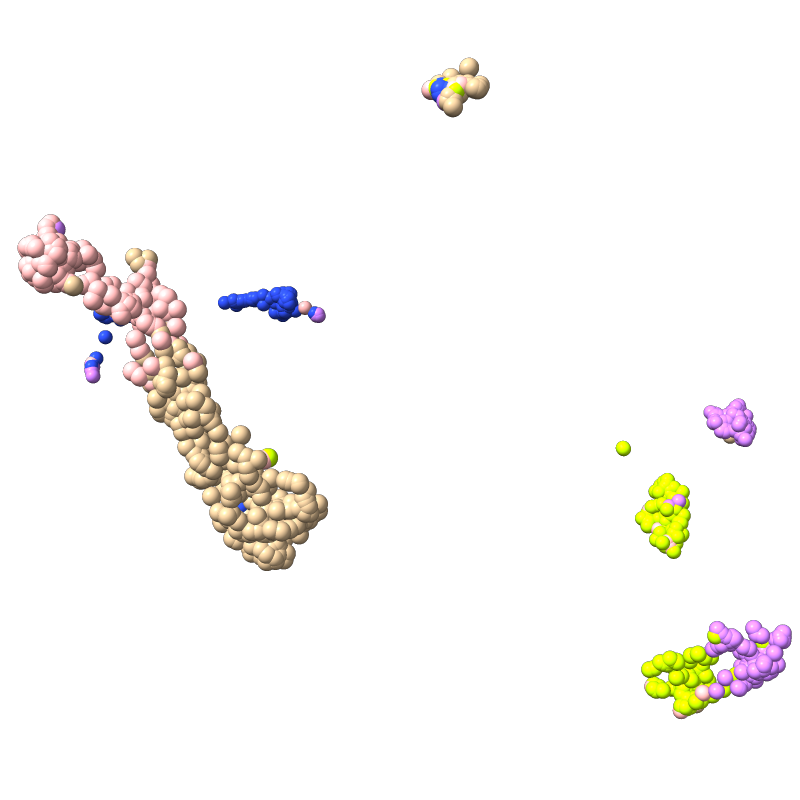

This is MDGL, a differential geometry based learning of networks for scRnAseq data analysis. The idea is to treat the set of embedded gene expression vectors as a point cloud, and to perform discrete-to-continuum mappings to generate sets of cell-cell interactive manifolds. We can perform curvature analysis on these manifolds to generate feature sets for cell type classificaion. Specifically, at each point/cell we calculate the mean and Gaussian curvature of the manifold. Different discrete-to-continuum mappings generate different manifold structures, inducing multi-scale analysis and a variety of features. These features are then fed to a machine learning classifier to identify cell types.
